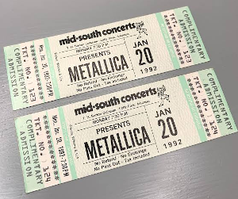

This problem is a Mooshak version of a CSES problem.

There are \(n\) concert tickets available, each with a certain price. Then, \(m\) customers arrive, one after another.Each customer announces the maximum price they are willing to pay for a ticket, and after this, they will get a ticket with the nearest possible price such that it does not exceed the maximum price.
The first input line contains integers \(n\) and \(m\): the number of tickets and the number of customers.
The next line contains \(n\) integers \(h_1,h_2,\ldots,h_n\): the price of each ticket.
The last line contains \(m\) integers \(t_1,t_2,\ldots,t_m\): the maximum price for each customer in the order they arrive.
Print, for each customer, a line with the price that they will pay for their ticket. After this, the ticket cannot be purchased again.
If a customer cannot get any ticket, print -1.
| Example Input | Example Output |
5 3 5 3 7 8 5 4 8 3 |
3 8 -1 |